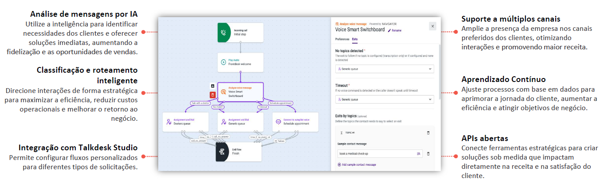

O Navigator simplifica menus e oferece experiências personalizadas com IA generativa. Ele prioriza consultas em tempo real, compreende solicitações por conversas naturais e entrega respostas flexíveis.
Identifica a intenção do cliente automaticamente, sem necessidade de treinamento prévio.
Direciona interações com base no contexto da conversa.
Configura fluxos personalizados para diferentes tipos de solicitações.
Funciona com chamadas de voz, mensagens digitais e redes sociais.
Ajusta respostas e roteamento com base em histórico e feedbacks.
Facilita integração com CRMs, bases de conhecimento e sistemas de suporte.
Se destaca pelo roteamento inteligente e dinâmico de interações, integrando todos os canais em uma experiência omnichannel unificada.
Com configuração no-code, permite ajustes rápidos sem necessidade de conhecimento técnico.
Utiliza IA e Machine Learning para direcionar clientes com base em histórico e contexto, garantindo eficiência.
Permite monitoramento e ajustes em tempo real, otimizando conforme a demanda. Comparado a outras soluções, é mais ágil, personalizável e eficiente.
Avaliar fluxos de trabalho e canais para otimizar processos existentes.
Estabelecer funções e permissões adequadas por perfil.
Planejar integração com CRMs e sistemas para acesso ao histórico do cliente.
Adaptar fluxos e scripts aos processos da empresa.
Requer motor de IA generativa com NLP para roteamento automático por intenção.